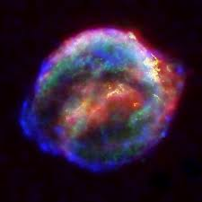
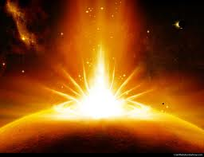

fire...
The ancient Greeks considered fire one of the major elements in the universe alongside water, earth, and air. Earth, water and air are all forms of matter, but fire is special; it is the visible, tangible side effect of matter changing form.
 In deep dance we seek to move our energy, and when we move, we find that we transform. Fire is the perfect symbol for this process.
In deep dance we seek to move our energy, and when we move, we find that we transform. Fire is the perfect symbol for this process.
For fire to start there has to be friction, focused light, or something else that is already burning. Dance is a kind of friction between the inner and the outer worlds.
It's true that sometimes our fires go out and we're left feeling cold and dark and disconnected. We may wish that someone will come and start a new fire for us. But no matter how fervently we wish for warmth and light, our internal fire is something that only we can start and, once started, that we are wholly responsible for maintaining. If we let it go out, we will have to build it again.
 External circumstances may have flooded your internal fire causing it to go out, or they may have fanned the flames to such an extent that the fire grew so large that it burnt up all your resources and left everything in ashes.
Don't despair. You have the power to build a new fire. And when the floods or the high winds come, with new knowledge and experience, you will know how to protect your fire from going out or from growing too big.
So, how do you keep your fire going? The answer is deceptively simple: you keep your fire going through the act of self-love. But is it possible to love something completely if you don't fully know it? Can you really love the parts that you've kept hidden out of sight in the darkest recesses of your cave?
In order to fully love yourself and others, you must be willing to shed a light on all your darkest places, integrate them, and appreciate them for making up the wonderful complex and unique totality of you.
Of course there's a delicate balance between love of self and love of others. Love yourself only and you will build a big fire that will feel threatening to others. Love yourself too little and your fire will grow smaller and smaller and eventually die.
It's not by accident that ancient myths tell that fire came from the gods. Fire is a powerful tool. If we use it skillfully, it can light our way, give comfort, and protect us. However, if we are not skillful, it will devour, destroy, burn, ruin, scar, and scorch all that it comes into contact with.
In Fire! we will explore, through dance and music, what fire means on a deep psychological and emotional level. Working with fire requires courage. (Certainly, we can choose not to work with it--if sitting in the cold and dark is something we enjoy, we have every right to turn away from fire--never testing our courage, never developing our skill.)
 First we start with what is there. Has our fire gone out, is it crackling nicely, is it sputtering and holding on for dear life, or is it burning so brightly that it threatens to consume our resources? Do we know what we need to feed our fire to keep it going? Do we have the skill to make it bigger or smaller at will? Can we contain it? Can we keep it safe? Can we honor it for its sacred and precious qualities?
In Fire! you are invited to come into communion with every aspect of your own fire.